Single-User Installation
The single-user installation is what you use to set up OpenOffice.org on one computer for one specific user only.
When installing OpenOffice.org as a single-user installation, log in to the system as that single specific user and install OpenOffice.org in any directory of your choice to which you have full access rights.

|
This type of installation should typically NOT be used on Unix / Linux systems.
Since Unix systems are rarely ever restricted to a single specific user, using the supplied install script or using the Multi-User / Network installation method is strongly recommended.
|
Installation Requirements
The directory into which OpenOffice.org is to be installed should have approximately 190 to 250 MB of free space, depending on the installation options you select. You will also need up to 40 MB of additional space for temporary files during installation. After successful completion of the installation, the temporary files will be automatically deleted.
Starting the Installation
|
|
If you have already installed a previous version of OpenOffice.org, you should first check to see if this file exists:
.sversionrc file in your Unix home directory or;sversion.ini file in the Windows user directory.
This file contains the path and version number of an already installed OpenOffice.org. If the version number is identical to the version number of the OpenOffice.org to be installed, you must deinstall the old OpenOffice.org version before you can install the new one.
|
- If necessary, log in to the system with your user name. You do not need any system administrator rights for a single-user installation.
|
|
- Under Unix, go to the graphical X Window interface if it was not already automatically activated.
- Go to the directory where the installation files reside – either by command line in a terminal window or through the File Manager.
- Start the installation script with the command:
./setup
|

|
- Under Windows, you can use the Windows Explorer to run the OpenOffice.org setup program. To start the setup program with a parameter, open the Start menu on the Windows Start bar, select the Run... command and enter the following line in the text box (you can also use the Browse button to find the file and to correctly enter the path in the text box):
X:\{tempdir}\install\setup.exe -parameter
where X:\{tempdir} is the temporary directory where the installation files reside after decompressing the downloaded installation file.
- To run the single-user installation, you do not have to give the setup program parameters. More information on setup parameters can be found in the Appendix.
|
The Setup Procedure
Welcome
The first thing to appear on the screen is a welcome dialog.
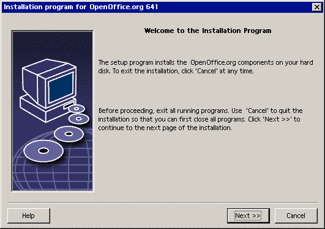
In many of the setup program dialogs you will see a Help button which displays brief information about the current dialog. After you have read the Help text, use the Back button to return to the setup program. Do NOT close the Help with the "X" system button (top right) as this would exit the setup program.
- Confirm the Welcome dialog by clicking the Next button.
Important Information
Now a window appears containing the readme.txt file (Windows) or README file(Solaris and Linux). This file can also be opened and read from the OpenOffice.org directory after the installation process is completed.
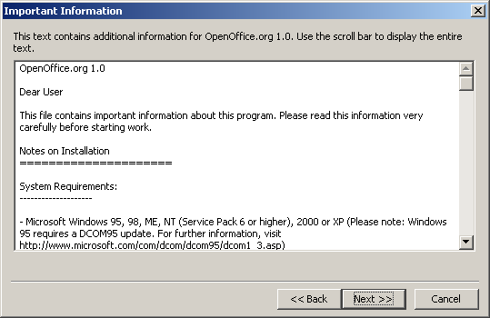
- Read the information and confirm by clicking Next.
License Agreement
The next dialog contains the license agreement.
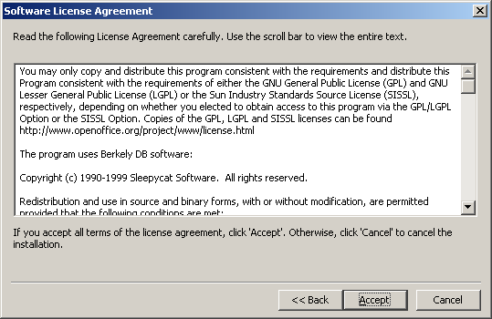
- Carefully read the license agreement. If you agree to all points, click Accept to continue with the installation. If you do not agree to the license agreement click Cancel. In the latter case OpenOffice.org will not be installed.
User Data
You will now see the Enter User Data dialog.
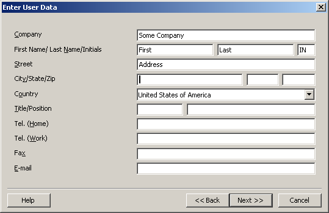
- Enter your personal data.
The data entered here will be used in fields in OpenOffice.org, for example, to automatically insert your data into the corresponding fields in letter and fax templates.
You can also access this dialog later by choosing Tools - Options - OpenOffice.org - User Data.
- Click Next to continue the installation.
Type of Installation
The next dialog in the OpenOffice.org setup program allows you to select the type of installation to be carried out.
The memory requirements shown here are approximates based on the cluster sizes of the next target directory containing sufficient free space.
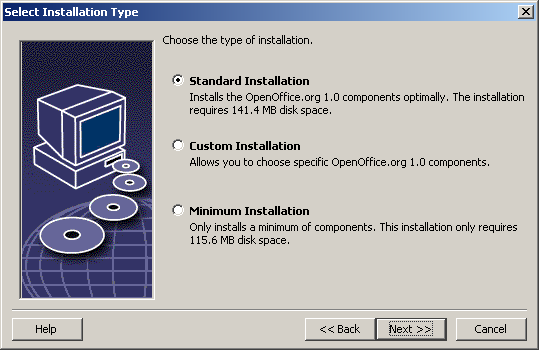
We recommend the Standard Installation for most users. This generally means that all of the components will be installed together with a selection of filters. If you select this option you will only be prompted to specify the directory in which OpenOffice.org is to be installed.
In the Custom Installation you also first see a dialog for selecting the installation directory. Then, in the subsequent dialog, you select the individual components to be installed.
The Minimum installation will only install those components that are required to run OpenOffice.org. If this is chosen the Help files will not be installed nor will the majority of the samples and templates. After choosing this option you will only be required to enter the name of the directory in which OpenOffice.org is to be installed.
- Select the type of installation suitable to your needs.
- Click Next to continue the installation.
Component Selection
If you have selected the Custom Installation you will now see dialog for selecting the components to be installed.
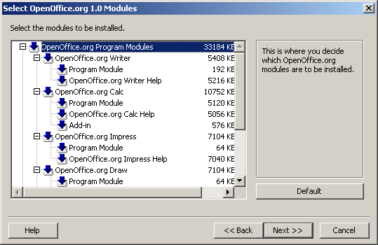
As a rule, all of the components which have a colored box next to their name will be installed. If you do not want to install a particular component, click the box next to the name and it will change to gray. Each time you click one of the boxes, it will change from colored to gray or vice versa, and the corresponding component and all subordinate components will either be part of the installation (colored) or not part of the installation (gray).
When you click the plus sign next to the name of a component, a list of the subordinate components will be revealed. Again, clicking the individual boxes will either include the components in or exclude them from the installation. If a group entry contains components to be installed as well as components excluded from installation, the box in front of the group entry will appear semi-transparent. For example, the box in front of the OpenOffice.org Writer text filters is by default semi-transparent because the default setting does not include all filters.
You can use the Default button, to restore the settings that were originally shown when the dialog was opened for the first time.
Entries shown in red denote that these components will be installed no matter what and that they cannot be deselected.
- Select the modules and components you want to include in the installation.
- Click Next to continue the installation.
Installation Directory
The next dialog to appear is for selecting the installation directory.
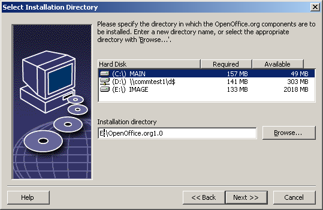
In the top part of the dialog, there is a list of the drives on your system with details regarding how much space is required and how much space is available. The amount of memory required can differ due to different drives and cluster sizes.
- You can also select the installation path from a selection dialog by clicking Browse or by directly entering the path in the text box. If the directory entered does not exist, you will be asked if it should be created. OpenOffice.org will install files and other subfolders with files in the directory you specify.
- Click Next to continue the installation.
Concluding the Installation Options
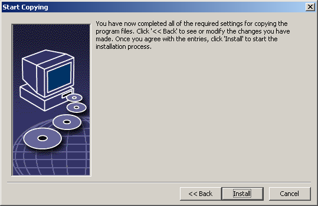
A dialog will inform you that all of the details needed to copy the program files have been entered.
- Click Install to continue the installation.
Assigning File Types
In the following dialog, select which additional file types are to be opened with OpenOffice.org. OpenOffice.org will be registered in the operating system as the default program for these file types.
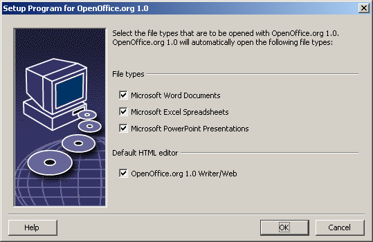
- Select the file types that OpenOffice.org is to open in addition to its own file types.
- To use OpenOffice.org as default editor for HTML files (Web pages), mark the check box under Default HTML Editor. This setting only applies to editing HTML files. They will be opened with your browser (e.g. Netscape).
- Click OK.
Java™ Runtime Environment
The next dialog to appear lists the Java Runtime Environment versions registered in your system.
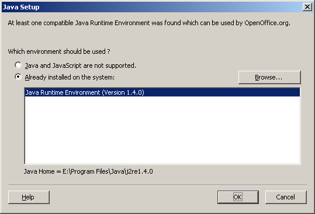
In this dialog, select the Java Runtime Environment you want to use. You require version 1.3.1 or higher. If you have already installed a newer version than 1.3.1, you do not have to install the version provided as long as OpenOffice.org identifies your version as verified.
- Select the preferred option and click OK.
Copying the Files
On screen, you will see how the installation is progressing and approximately how much time is left till the installation is complete.
Concluding the Installation
After the process of copying and registering the files is finished, you will see the final dialog.
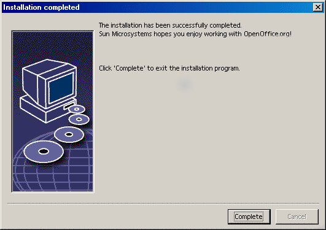
- Click Complete to finish the installation.
Starting OpenOffice.org
|
|
To start OpenOffice.org under Unix, go to the OpenOffice.org1.0/program directory, or to the local OpenOffice.org directory in your home directory, and start OpenOffice.org with the command
./soffice
You can also place the OpenOffice.org1.0/program directory into the path for programs under Unix. You will then be able to start OpenOffice.org by using the command "soffice" in any directory. To set up the default printer, call the Printer Administration Utility spadmin, which is described in the Appendix.
After completing the installation process under the Solaris Operating Environment, you should log out and log in again to update the CDE integration.
|
|
|
Under Windows in the Start menu under programs / OpenOffice.org 1.0, you will now find menu entries for starting the various OpenOffice.org components that have been installed.
During the OpenOffice.org installation, a link is created in the autostart folder of the Windows Start menu. This link leads to the OpenOffice.org Quickstarter, which is available in the system tray after you restart your system.
Right-click the Quickstarter icon to activate a context menu from which you can start various OpenOffice.org components.
Detailed information on Quickstarter functionality can be found in the Help under the word "Quickstart".
|